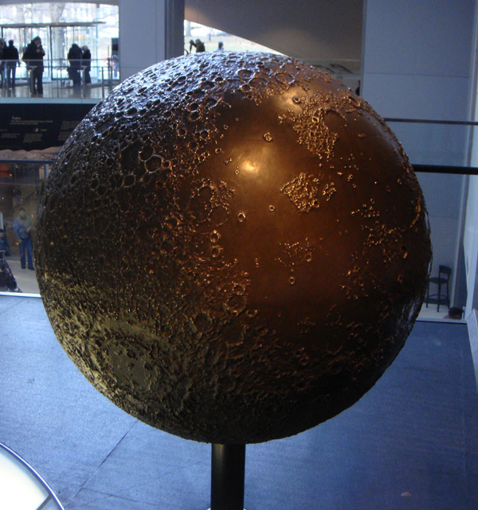

Bronze Globes
In 1998, Geo-F/X was hired by Datum3D of Boston to provide all the GIS data and calculations required to produce a perfectly scaled model of the earth. The model was going to be used to drive a multi-axis milling machine that would mill a series of pie-shaped slices of the earth out of plastic. Each slice was a 22.5 degree slice of one hemisphere. So a total of 16 slices were milled. These were then assembled by a sculptor into a globe 42" in diameter. The resulting armature was used to create a mold which was in turn used to cast a bronze earth, one hemisphere at a time. The two halves were then welded together along the equator.
The resulting bronze globe was then mounted on a pedestal and is on display at the Gottesman Hall of Planet Earth in the American Museum of Natural History in New York.

The patrons were so pleased with the result that they requested a similar globe of the moon.
Technical Details
- Both globes are 42" in diameter.
- The data was drawn from the GLOBE and TOPO30 projects (see how the projections were done here)
- The relief on the globes is exaggerated 22 times. The sculptor originally wanted no exaggeration despite Geo-F/X's warning that the earth would be smooth as a ping-pong ball without exaggeration. One slice was milled like that before the sculptor saw the true reality.
- In addition to the exaggeration, the oceans had to be dropped 500 feet in order to make the shorelines visible. Again, the sculptor had to have a sample milled before he believed it. Even so the coastline of Florida, for example, is hard to see.
- People are encouraged to touch the sculpture. One of the interesting consequences of this is that the mountains are being slowly worn down. The Himalaya, for example, since they are readily accessible just north of the equator are not nearly as sharply defined as they originally were. To see the difference if you visit the sculpture, bend down and touch the Andes in southern Chile. Much sharper!